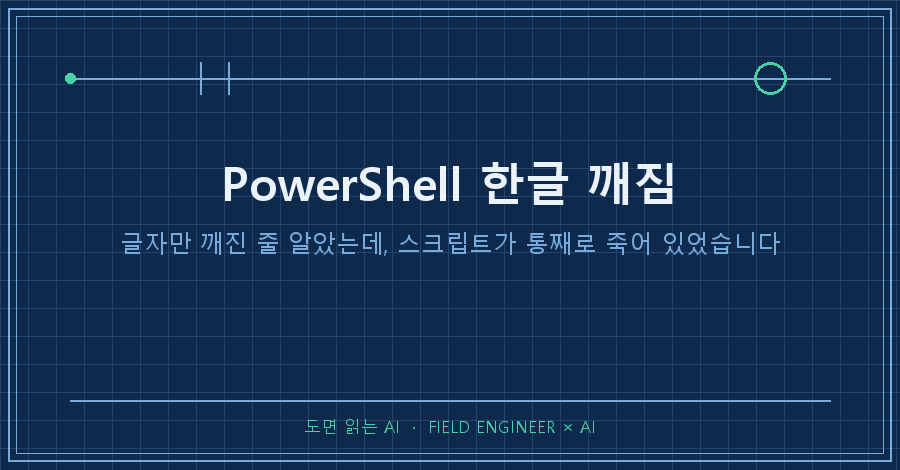
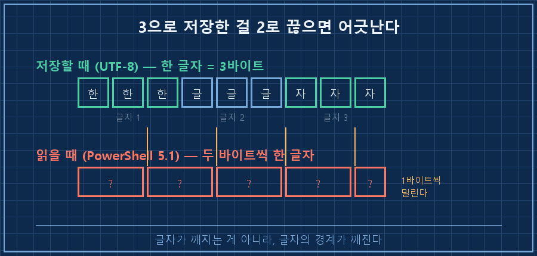
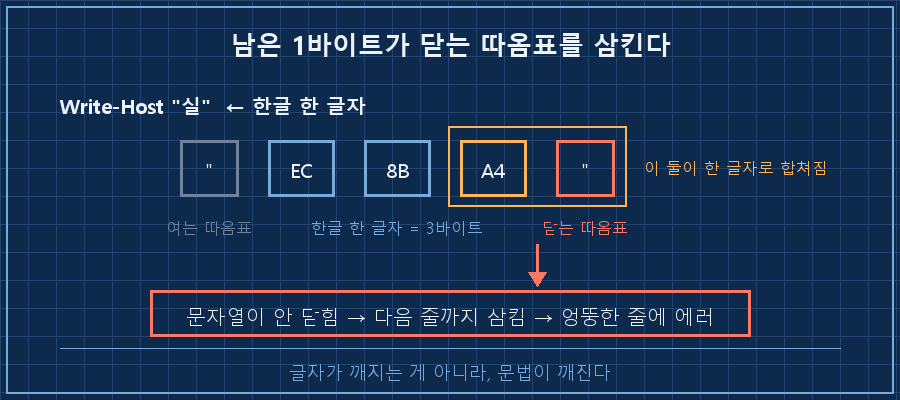
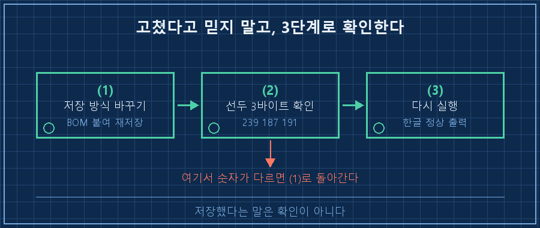

AI한테 PC 점검 스크립트를 하나 짜달라고 했어요. 받아서 저장하고 실행했더니, 첫 줄부터 이게 나왔습니다.
[?ㅽ뙣] 沅뚰븳???놁뒿?덈떎PowerShell 한글 깨짐은 글꼴이나 터미널 설정 문제가 아니라, 파일을 어떻게 저장했느냐의 문제예요. Windows PowerShell 5.1은 파일 맨 앞에 표식이 없으면 UTF-8로 저장된 파일을 옛 한국어 코드페이지로 읽습니다. 그래서 한글만 골라서 깨져요.
고치는 건 한 줄입니다. 파일을 BOM 붙은 UTF-8로 다시 저장하면 끝나요.
문제는 글자만 깨지고 끝나지 않는다는 겁니다. 운이 나쁘면 깨진 바이트가 문자열 끝의 따옴표를 삼켜서, 스크립트가 시작도 못 하고 문법 오류로 죽어요. 저는 그걸로 한 번 날렸습니다.
2026년 9월 기준이고, 확인한 환경은 Windows 10 Pro(빌드 19045)에 기본으로 깔린 Windows PowerShell 5.1입니다. 정확히는 5.1.19041.7725였어요. 이 글의 로그는 전부 오늘 제 장비에서 다시 재현해서 뽑은 것들입니다.
1. 증상이 두 가지로 갈립니다
제 본업은 제어 쪽이에요. 설비 돌리는 프로그램 짜고 현장에서 맞는지 확인하는 일인데, 요즘은 그 일 상당 부분을 AI랑 같이 합니다. 집 노트북 점검도 마찬가지라, 절전 설정 바꾸는 스크립트를 AI한테 시켜서 받았어요.
첫 번째 증상은 위에 보여드린 거예요. 실행은 됩니다. 명령도 다 돌아가요. 그런데 화면에 찍히는 안내문만 알아볼 수 없는 글자로 나옵니다. 성공했는지 실패했는지를 그 안내문으로 판단하려던 거라, 사실상 눈을 가리고 돌린 셈이었어요.
두 번째가 진짜입니다. 같은 방식으로 저장한 다른 파일은 아예 실행이 안 됐어요.
At C:\temp\check.ps1:2 char:14
+ Write-Host "[?ㅽ뙣] 沅뚰븳 ?놁쓬"
+ ~
Array index expression is missing or not valid.배열이 어쨌다는 얘기가 나오는데, 제 스크립트에는 배열이 한 개도 없었습니다. 깨진 글자 안에 하필 대괄호로 읽히는 바이트가 들어 있었던 거예요.
더 고약한 것도 있었어요.
At C:\temp\check.ps1:2 char:15
+ Write-Host "OK"
+ ~
The string is missing the terminator: ".2번째 줄이 문제라고 찍혀 있는데, 2번째 줄은 영어만 있는 멀쩡한 줄입니다. 진짜 범인은 1번째 줄의 한글이었어요. 에러 줄 번호가 실제 문제 줄이 아닌 겁니다. 이거 모르고 2번 줄만 몇 번을 고쳤는지 모르겠어요..
2. 왜 한글만 깨지나요?
한글 한 글자는 UTF-8로 저장하면 3바이트를 씁니다. 그런데 PowerShell 5.1이 이 파일을 옛 한국어 코드페이지로 읽으면 2바이트씩 끊어서 한 글자로 봐요. 3으로 저장한 걸 2로 끊는 거라 한 글자마다 1바이트씩 어긋납니다.

글자가 깨지는 건 여기까지예요. 문법 오류는 한 걸음 더 갑니다.
한글 글자 수가 홀수로 끝나면 마지막에 1바이트가 남아요. 그 남은 바이트가 다음 글자의 앞자리로 잡히면서, 바로 뒤에 있던 닫는 따옴표를 같이 먹어버립니다. 따옴표가 사라지니 PowerShell 입장에선 문자열이 안 닫힌 거예요. 그래서 다음 줄까지 문자열로 이어서 읽다가 거기서 에러를 뱉습니다. 에러 줄 번호가 엉뚱하게 찍히는 이유가 이겁니다.

3. 고치는 법은 파일을 다시 저장하는 것뿐이에요
PowerShell 한글 깨짐은 코드를 고쳐서 잡는 게 아니라 저장 방식을 고쳐서 잡습니다. 파일 맨 앞에 UTF-8이라는 걸 알려주는 3바이트짜리 표식을 붙이면 돼요. 이걸 BOM이라고 부릅니다.
PowerShell 창을 열고 이 두 줄이면 끝나요. 경로만 본인 파일로 바꾸시면 됩니다.
$p = "C:\temp\check.ps1"
$c = [System.IO.File]::ReadAllText($p, [System.Text.UTF8Encoding]::new($false))
[System.IO.File]::WriteAllText($p, $c, [System.Text.UTF8Encoding]::new($true))첫 줄에서 BOM 없이 읽고, 다음 줄에서 BOM을 붙여 덮어씁니다. $false가 "BOM 없음", $true가 "BOM 있음"이에요. 이 둘만 안 바뀌면 됩니다.
메모장에서 다른 이름으로 저장하면서 인코딩을 UTF-8 (BOM)으로 고르셔도 같은 결과예요. 다만 파일이 여러 개면 위 방식이 빠릅니다.
4. 고쳐졌는지는 눈으로 확인하세요
저장했다고 믿지 말고 두 가지를 봅니다. 먼저 파일 맨 앞 3바이트예요.
(Get-Content "C:\temp\check.ps1" -Encoding Byte -TotalCount 3) -join ' '239 187 191이 세 숫자가 BOM 세 바이트입니다. 이게 안 나오면 저장이 안 된 거예요. 그다음 실제로 돌려봅니다.
[성공] 적용됨
[실패] 권한 없음
끝깨졌던 그 파일이 이렇게 나오면 끝난 겁니다. 저는 아까 그 스크립트를 이 순서로 고쳐서 다시 돌렸고, 한 번에 통과했습니다!

5. 배치파일(.bat)은 정반대라 헷갈립니다
여기서 한 번 더 걸렸어요. PowerShell에서 배운 걸 그대로 배치파일에 적용했다가 똑같이 깨졌거든요. 두 개는 정반대입니다.
| 구분 | .ps1 (PowerShell 5.1) | .bat (명령 프롬프트) |
|---|---|---|
| 기본으로 읽는 방식 | 표식 없으면 옛 한국어 코드페이지 | 항상 옛 한국어 코드페이지 |
| UTF-8로 저장하면 | BOM 있으면 정상, 없으면 깨짐 | 한글이 깨짐 |
| 한글을 쓰려면 | BOM 붙여 저장 | 아예 한글을 안 쓰는 게 안전 |
| 안 지켰을 때 | 문법 오류로 실행 실패 | 깨진 글자를 명령어로 실행 시도 |
배치파일 쪽 마지막 칸이 제일 위험해요. 한글 주석 한 줄 넣고 UTF-8로 저장한 파일을 돌렸더니 이렇게 나왔습니다.
'??정' is not recognized as an internal or external command,
operable program or batch file.
exit=0깨진 글자를 명령어인 줄 알고 실행하려다 실패한 거예요. 그런데 마지막 줄을 보세요. 종료 코드는 0, 그러니까 정상 종료입니다. 자동화에 걸어두고 종료 코드만 보고 있었으면 아무 문제 없는 걸로 보였을 거예요. 그래서 저는 배치파일에는 한글을 안 씁니다. 주석까지 전부 영어로 적어요.
이 부분은 미리 적어두는 게 낫겠네요
Q. AI한테 시키면 알아서 맞게 저장해주지 않나요?
제가 써본 도구들은 BOM 없이 저장했어요. 그게 요즘 표준이라 이상한 동작도 아니고요. 문제는 Windows에 기본으로 깔린 PowerShell 5.1이 그 표준을 그대로 못 읽는다는 거예요. 그래서 저는 아예 순서를 바꿨습니다. 한글 들어간 스크립트를 받으면 실행하기 전에 BOM 재저장부터 하고, 그다음에 돌려요. 같은 실수를 두 번 하고 나서야 순서를 바꿨습니다.
Q. 그냥 한글을 안 쓰면 되는 거 아닌가요?
그것도 맞는 답이에요. 실제로 배치파일은 그렇게 씁니다. 다만 스크립트가 길어지면 "[실패] 권한이 없습니다" 같은 안내문이 있고 없고가 차이가 커요. 급할 때 영어 메시지를 읽고 있을 여유가 없더라고요. 그래서 PowerShell 쪽은 BOM을 붙이는 쪽으로 정리했습니다.
Q. PowerShell 7을 쓰면 해결되나요?
7은 기본 인코딩 정책이 다른 걸로 알고 있습니다. 다만 제 장비에는 5.1만 깔려 있어서 직접 확인은 못 했어요. 확인 안 된 건 확인 안 됐다고 적어둡니다. 어차피 Windows에 기본으로 들어 있는 건 5.1이라, 남에게 넘길 스크립트라면 5.1 기준으로 맞춰두는 편이 안전하고요.
PowerShell 한글 깨짐 자체는 눈에 보이니까 금방 압니다. 진짜 시간을 잡아먹은 건 엉뚱한 줄을 가리키던 에러 메시지였어요. 지금은 한글 스크립트에서 이상한 문법 오류가 뜨면 코드부터 안 봅니다. 파일 맨 앞 3바이트부터 찍어봐요.
혹시 지금 AI한테 받아서 쓰고 계신 스크립트, 한글이 들어 있나요?
이런 식으로 밟았던 함정들은 makefield.ai에 하나씩 쌓아두는 중입니다.
태그: #PowerShell한글깨짐 #ps1한글깨짐 #파워셸스크립트오류 #파워셸실행오류 #bat한글깨짐 #배치파일한글깨짐 #UTF8BOM #윈도우인코딩 #CP949 #스크립트문자깨짐 #AI스크립트작성 #AI코딩도구 #AI에게일시키기 #AI로PC점검 #도면읽는AI